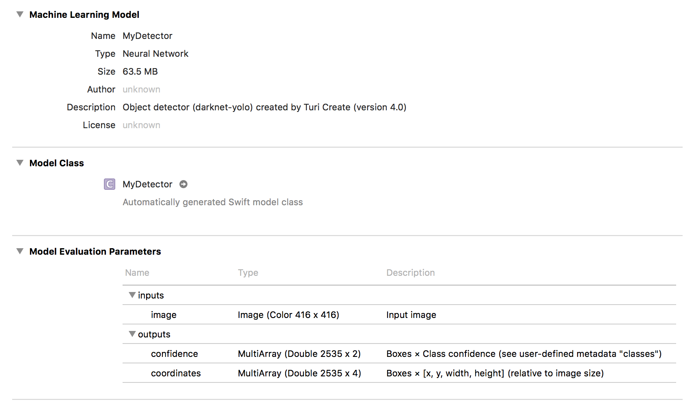

Deploying to Core ML
Object detector models created in Turi Create can easily be deployed to Core ML.
Deployment for iOS 12 and macOS 10.14 (Turi Create 5)
With Turi Create 5.0+ and starting in iOS 12, macOS 10.14 you can directly integrate object detector models via the Vision Framework.
You can export to Core ML in Turi Create 5 as follows:
model.export_coreml('MyDetector.mlmodel')let mlmodel = MyDetector()
let visionModel = try VNCoreMLModel(for: mlmodel.model)
let objectRecognition = VNCoreMLRequest(model: visionModel,
completionHandler: { (request, error) in
guard let results = request.results else { return }
for case let foundObject as VNRecognizedObjectObservation in results {
let bestLabel = foundObject.labels.first! // Label with highest confidence
let objectBounds = foundObject.boundingBox // Normalized between [0,1]
let confidence = foundObject.confidence // Confidence for the predicted class
// Use the computed values.
print(bestLabel.identifier, confidence, objectBounds)
}
})
objectRecognition.imageCropAndScaleOption = .scaleFillFor more details on the integration with Core ML and a sample app to get you started, please look at the the article on Recognizing Objects in Live Capture. Please note that the demo in the above link uses a normalized confidence which enforces that the score across all classes sum to 1.
Note: The bounding box object VNRecognizedObjectObservation.boundingBox has a different definition from the one used for Turi Create. First, the location is defined by the lower-left corner of the bounding box instead of the center. Secondly, the coordinate space has origin located in the lower-left corner of image. Third, the location, width, and height for the bounding box are all normalized between [0,1] by the dimensions of the images.
Note: Only models that were exported with non-maximum suppression (the default
behavior in Turi Create 5.0+) will work with this example app. Older models
or models that specify include_non_maximum_suppression=False will not give
results as VNRecognizedObjectObservation objects and instead as
VNCoreMLFeatureValueObservation objects; these are silently ignored in
this example app. To learn how to work with VNCoreMLFeatureValueObservation
objects, please continue reading.
Deployment for iOS 11 and macOS 10.13
To deploy the object detector in apps for iOS 11 and macOS 10.13, you need a few extra steps (these have been incorporated into iOS 12 and macOS 10.14).
You can export to Core ML in Turi Create 5 as follows:
model.export_coreml('MyDetector.mlmodel', include_non_maximum_suppression=False)and with Turi Create 4 you can do
model.export_coreml('MyDetector.mlmodel')This Core ML model takes an image and outputs two matrices of floating point values, confidence and coordinates. The first one has shape N-by-C, where N is the maximum number of bounding boxes that can be returned in a single image, and C is the number of classes. If you index this at (n, c), you get the confidence of the n:th bounding box for class c. The other output, coordinates, is N-by-4 and contains [x, y, width, height] coordinates for each bounding box. The coordinates are expressed relative to the original input size as values between 0 and 1. This is because it does not know the size before it was resized to fit the neural network. To get pixel values as in Turi Create, you have to multiply x and width by the original width y and height by the original height. Note that x and y refer to the center of the box.
Drag and drop MyDetector.mlmodel into your Xcode project and add it to
your app by ticking the appropriate Target Membership check box. An
arrow next to MyDetector should appear:

Useful meta data is stored inside the model, such as class labels:
let mlmodel = MyDetector()
let userDefined: [String: String] = mlmodel.model.modelDescription.metadata[MLModelMetadataKey.creatorDefinedKey]! as! [String : String]
let labels = userDefined["classes"]!.components(separatedBy: ",")The order of labels corresponds to the confidence output. The meta data
also contains a third type of threshold that we have yet to discuss:
non_maximum_suppression_threshold:
let nmsThreshold = Float(userDefined["non_maximum_suppression_threshold"]!) ?? 0.5Before we discuss how to use this threshold, we must first make a prediction.
Prediction
Making a prediction is easy. Starting in iOS 13 we can now include confidence thresholds
directly in the VNCoreMLModel. For an example of how to include thresholds in a project utilizing the Vision framework,
see here.
First, we need to setup a subclass of MLFeatureProvider:
class ThresholdProvider: MLFeatureProvider {
open var values = [
"iouThreshold": MLFeatureValue(double: 0.3),
"confidenceThreshold": MLFeatureValue(double: 0.2)
]
var featureNames: Set<String> {
return Set(values.keys)
}
func featureValue(for featureName: String) -> MLFeatureValue? {
return values[featureName]
}
}After we've specified one or more thresholds, we assign them to the model object and make a prediction:
let model = try VNCoreMLModel(for: mlmodel.model)
model.featureProvider = ThresholdProvider()
let request = VNCoreMLRequest(model: model, completionHandler: { [weak self] request, error in
self?.processClassifications(for: request, error: error)
})
request.imageCropAndScaleOption = .scaleFillWe use .scaleFill that stretches the image into the native input size of the
model. If you use .centerCrop or .scaleFit, it will be a bit trickier to
correctly map the bounding box coordinate system to the original input image.
From the request results we get two MLMultiArray instances,
coordinates and confidence. For easier handling, we will convert these
results into an array of the following struct:
struct Prediction {
let labelIndex: Int
let confidence: Float
let boundingBox: CGRect
}While building an array of these, we might as well trim the list of predictions
by enforcing a minimum confidence threshold. This threshold is entirely up to
you and your user experience and corresponds to the confidence_threshold
parameter in predict inside Turi Create:
let results = request.results as! [VNCoreMLFeatureValueObservation]
let coordinates = results[0].featureValue.multiArrayValue!
let confidence = results[1].featureValue.multiArrayValue!
let confidenceThreshold = 0.25
var unorderedPredictions = [Prediction]()
let numBoundingBoxes = confidence.shape[0].intValue
let numClasses = confidence.shape[1].intValue
let confidencePointer = UnsafeMutablePointer<Double>(OpaquePointer(confidence.dataPointer))
let coordinatesPointer = UnsafeMutablePointer<Double>(OpaquePointer(coordinates.dataPointer))
for b in 0..<numBoundingBoxes {
var maxConfidence = 0.0
var maxIndex = 0
for c in 0..<numClasses {
let conf = confidencePointer[b * numClasses + c]
if conf > maxConfidence {
maxConfidence = conf
maxIndex = c
}
}
if maxConfidence > confidenceThreshold {
let x = coordinatesPointer[b * 4]
let y = coordinatesPointer[b * 4 + 1]
let w = coordinatesPointer[b * 4 + 2]
let h = coordinatesPointer[b * 4 + 3]
let rect = CGRect(x: CGFloat(x - w/2), y: CGFloat(y - h/2),
width: CGFloat(w), height: CGFloat(h))
let prediction = Prediction(labelIndex: maxIndex,
confidence: Float(maxConfidence),
boundingBox: rect)
unorderedPredictions.append(prediction)
}
}This gives us an array of predictions (unorderedPredictions), still in no
particular order. This array contains more predictions than returned by
predict in Turi Create, since we are still missing a post-processing step
called non-maximum suppression.
Non-maximum suppression
This step is performed automatically by predict in Turi Create, but it
is not performed inside the Core ML inference model, so we will have to
add it ourselves. The model is prone to predict multiple similar
predictions associated with a single object instance. Here are the
results of the two dogs without non-maximum suppression:

The algorithm is simple: Start by taking your highest-confidence prediction and
add it to your final list of predictions.
Check the IoU (see Evaluation) between it and and all the remaining
predictions. Remove (or suppress) any prediction with an IoU above a
pre-determined threshold (the nmsThreshold we extracted from the meta data).
Repeat this procedure, now excluding predictions that you have already added
or removed. Here is a reference implementation:
# Array to store final predictions (after post-processing)
var predictions: [Prediction] = []
let orderedPredictions = unorderedPredictions.sorted { $0.confidence > $1.confidence }
var keep = [Bool](repeating: true, count: orderedPredictions.count)
for i in 0..<orderedPredictions.count {
if keep[i] {
predictions.append(orderedPredictions[i])
let bbox1 = orderedPredictions[i].boundingBox
for j in (i+1)..<orderedPredictions.count {
if keep[j] {
let bbox2 = orderedPredictions[j].boundingBox
if IoU(bbox1, bbox2) > nms_threshold {
keep[j] = false
}
}
}
}
}The intersection-over-union can be computed as:
public func IoU(_ a: CGRect, _ b: CGRect) -> Float {
let intersection = a.intersection(b)
let union = a.union(b)
return Float((intersection.width * intersection.height) / (union.width * union.height))
}The array predictions is now the final array of predictions corresponding
to what predict returns in Turi Create.